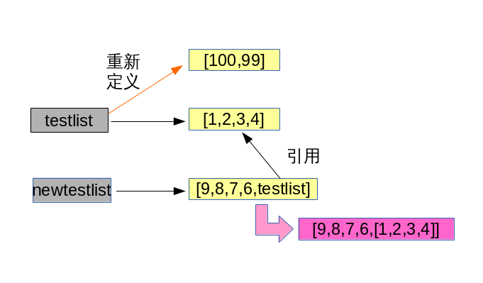
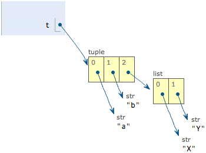

Python的核心数据类型
| 内置对象 | 例子 常量/创建 | |
|---|---|---|
| Number | 数字 | 12,3.14,3+4j |
| String | 字符串 | ‘hello’,”I’m ok” |
| List | 列表 | [1,[2,’three’],4] |
| Dictionaries | 字典 | {‘food’: ‘spam’, ‘taste’: ‘yum’} |
| Tuple | 元组 | (1,’spam’, 4, ‘U’) |
| File | 文件 | myfile = open(‘eggs’, ‘r’) |
| Set | 集合 | set(‘abc’),{‘a’,’b’,’c’} |
| 其他 | 类型 | 类型、none、布尔型 |
| 编程单元 | 类型 | 函数、模块、类 |
| 与实现相关 | 类型 | 编译的代码堆栈跟踪 |
前面我们学习了数字，字符串，文件三种数据类型，接下来我们将一起学习其他高级数据类型。
列表
Python内置的一种数据类型是列表：list。list是一种有序的集合，可以随时添加和删除其中的元素。
列出班里所有同学的名字，就可以用一个list表示：
In [1]: classmates = ['batman','superman','green'] |
变量classmates就是一个list。用len()函数可以获得list元素的个数：
In [3]: len(classmates) |
用索引来访问list中每一个位置的元素，记得索引是从0开始的：
In [4]: classmates[0] |
当索引超出了范围时，Python会报一个IndexError错误，所以，要确保索引不要越界，记得最后一个元素的索引是len(classmates) - 1。
如果要取最后一个元素，除了计算索引位置外，还可以用
-1做索引，直接获取最后一个元素：
In [8]: classmates[-1] |
以此类推，可以获取倒数第2个、倒数第3个：
In [10]: classmates[-1] |
当然，倒数第4个就越界了。
list是一个可变的有序表，所以，可以往list中追加元素到末尾：
In [13]: classmates.append('supergirl') |
也可以把元素插入到指定的位置，比如索引号为1的位置：
In [15]: classmates.insert(1,'leo') |
要删除list末尾的元素，用pop()方法：
In [17]: classmates.pop() |
要删除指定位置的元素，用pop(i)方法，其中i是索引位置：
In [18]: classmates |
要把某个元素替换成别的元素，可以直接赋值给对应的索引位置：
In [21]: classmates[1] = 'oracle' |
list里面的元素的数据类型也可以不同，比如：
In [23]: L = ['apple',1,True] |
list元素也可以是另一个list，比如：
In [24]: S = ['python',['java','shell'],'awk'] |
要注意s只有3个元素，其中s[1]又是一个list，如果拆开写就更容易理解了：
In [26]: T = [L,S,'and'] |
要拿到’apple’可以写T[0][0]或者L[0]，因此T可以看成是一个二维数组，类似的还有三维、四维……数组，不过很少用到。
如果一个list中一个元素也没有，就是一个空的list，它的长度为0：
In [30]: L = [] |
| name | set |
|---|---|
| 新建列表 | testList=[10086,’中国移动’,[1,2,4,5]] |
| 删除列表元素 | del testList[0:4] |
| 列表长度 | len(testList) |
| 到列表结尾 | print testList[1:] |
| 向列表添加元素 | testList.append(‘i'm new here!’) |
| 弹出列表的最后一个元素 | testList.pop(1) |
| 列表运算 | numlist * 2 |
| 插入元素 | testList[0:2] = [1,0,0,0] |
| 扩展列表 | testList.extend([7,8,9,10]) |
| 列表反转 | testList.reverse() |
In [16]: tl = [10086,'zgyd',[1,2,3,4]] |
列表的运算
列表也可以进行加和乘。
In [33]: numlist = [1,2,3,4] |
上面进行了列表的乘法,注意并不是每个元素乘以二,而是整个列表被重复
了两次,重新接合成一个新的列表。
列表操作
In [41]: testlist=[] |
重点:在 list 上调用 sort 之类的函数会造成 list 本身被改变,这个 immutable
的变量是不一样的。一定不能重新赋值,例如:
testList = testList.sort()
将会导致 testList 失去对原对象的引用。
注意引用的问题
用一个例子程序来说明这个问题:
引用,而非拷贝
- 引用 testList;如果 testList 被改变了,就会影响 newTestList;
- 但是如果 testList 被重新定义了;就不会影响 newTestList
In [66]: testlist=[1,2,3,4] |

课堂练习
#!/usr/bin/env python |
执行结果：
我有4 个东西要买。 |
元组
另一种有序列表叫元组：tuple。tuple和list非常类似，但是tuple一旦初始化就不能修改.
| name | set |
|---|---|
| 新建元组 | classmates = (‘Michael’, ‘Bob’, ‘Tracy’) |
| 删除元组 | del classmates |
比如同样是列出同学的名字：
In [1]: classmates = ('Michael', 'Bob', 'Tracy') |
现在，classmates这个tuple不能变了，它也没有append()，insert()这样的方法。其他获取元素的方法和list是一样的，你可以正常地使用classmates[0]，classmates[-1]，但不能赋值成另外的元素。
不可变的tuple有什么意义？因为tuple不可变，所以代码更安全。如果可能，能用tuple代替list就尽量用tuple。
tuple的陷阱：当你定义一个tuple时，在定义的时候，tuple的元素就必须被确定下来，比如：
In [3]: t = (1,2) |
如果要定义一个空的tuple，可以写成()：
In [5]: t = () |
但是，要定义一个只有1个元素的tuple，如果你这么定义：
In [7]: t = (1) |
定义的不是tuple，是1这个数！这是因为括号()既可以表示tuple，又可以表示数学公式中的小括号，这就产生了歧义，因此，Python规定，这种情况下，按小括号进行计算，计算结果自然是1。
所以，只有1个元素的tuple定义时必须加一个逗号,，来消除歧义：
In [9]: t = (1,) |
Python在显示只有1个元素的tuple时，也会加一个逗号,，以免你误解成数学计算意义上的括号。
最后来看一个“可变的”tuple：
In [11]: t = ('a','b',['A','B']) |
这个tuple定义的时候有3个元素，分别是’a’，’b’和一个list。不是说tuple一旦定义后就不可变了吗？怎么后来又变了？
别急，我们先看看定义的时候tuple包含的3个元素：
当我们把list的元素’A’和’B’修改为’X’和’Y’后，tuple变为：

表面上看，tuple的元素确实变了，但其实变的不是tuple的元素，而是list的元素。tuple一开始指向的list并没有改成别的list，所以，tuple所谓的“不变”是说，tuple的每个元素，指向永远不变。即指向’a’，就不能改成指向’b’，指向一个list，就不能改成指向其他对象，但指向的这个list本身是可变的！
理解了“指向不变”后，要创建一个内容也不变的tuple怎么做？那就必须保证tuple的每一个元素本身也不能变。
小结
list和tuple是Python内置的有序集合，一个可变，一个不可变。根据需要来选择使用它们。
字典
| name | set |
|---|---|
| 新建字典 | testDict={ ‘time’:’时间’,’machine’:’机器’,’time machine’:’时间机器’} |
| 输出字典key的value | testDict[‘time’] |
| 删除字典or key | del testDict[‘a’] |
| 删除key | d.pop(‘Bob’) |
Python内置了字典：dict的支持，dict全称dictionary，在其他语言中也称为map，使用键-值（key-value）存储，具有极快的查找速度。
举个例子，假设要根据同学的名字查找对应的成绩，如果用list实现，需要两个list：
names = ['Michael', 'Bob', 'Tracy']scores = [95, 75, 85]
给定一个名字，要查找对应的成绩，就先要在names中找到对应的位置，再从scores取出对应的成绩，list越长，耗时越长。
如果用dict实现，只需要一个“名字”-“成绩”的对照表，直接根据名字查找成绩，无论这个表有多大，查找速度都不会变慢。用Python写一个dict如下：
In [18]: d = {'Michael': 95, 'Bob': 75, 'Tracy': 85} |
为什么dict查找速度这么快？因为dict的实现原理和查字典是一样的。假设字典包含了1万个汉字，我们要查某一个字，一个办法是把字典从第一页往后翻，直到找到我们想要的字为止，这种方法就是在list中查找元素的方法，list越大，查找越慢。
第二种方法是先在字典的索引表里（比如部首表）查这个字对应的页码，然后直接翻到该页，找到这个字，无论找哪个字，这种查找速度都非常快，不会随着字典大小的增加而变慢。
dict就是第二种实现方式，给定一个名字，比如’Michael’，dict在内部就可以直接计算出Michael对应的存放成绩的“页码”，也就是95这个数字存放的内存地址，直接取出来，所以速度非常快。
你可以猜到，这种key-value存储方式，在放进去的时候，必须根据key算出value的存放位置，这样，取的时候才能根据key直接拿到value。
把数据放入dict的方法，除了初始化时指定外，还可以通过key放入：
In [21]: d['Adam'] = 67 |
由于一个key只能对应一个value，所以，多次对一个key放入value，后面的值会把前面的值冲掉：
In [23]: d['Jack'] = 90 |
如果key不存在，dict就会报错：
In [27]: d['Thomas'] |
要避免key不存在的错误，有两种办法，一是通过in判断key是否存在：
In [28]: 'Thomas' in d |
二是通过dict提供的get方法，如果key不存在，可以返回None，或者自己指定的value：
In [29]: d.get('Thomas') |
注意：返回None的时候Python的交互式命令行不显示结果。
要删除一个key，用pop(key)方法，对应的value也会从dict中删除：
In [31]: d |
请务必注意，dict内部存放的顺序和key放入的顺序是没有关系的。
和list比较，dict有以下几个特点：
- 查找和插入的速度极快，不会随着key的增加而增加；
- 需要占用大量的内存，内存浪费多。
而list相反：
- 查找和插入的时间随着元素的增加而增加；
- 占用空间小，浪费内存很少。
所以，dict是用空间来换取时间的一种方法。
dict可以用在需要高速查找的很多地方，在Python代码中几乎无处不在，正确使用dict非常重要，需要牢记的第一条就是dict的key必须是不可变对象。
这是因为dict根据key来计算value的存储位置，如果每次计算相同的key得出的结果不同，那dict内部就完全混乱了。这个通过key计算位置的算法称为哈希算法（Hash）。
要保证hash的正确性，作为key的对象就不能变。在Python中，字符串、整数等都是不可变的，因此，可以放心地作为key。而list是可变的，就不能作为key：
In [34]: key = [1, 2, 3] |
集合
| name | set |
|---|---|
| 新建集合 | s = set([1, 2, 3]) |
| 添加元素 | s.add(key) |
| 删除元素 | s.remove(key) |
| 交集、并集 | “&|” |
set和dict类似，也是一组key的集合，但不存储value。由于key不能重复，所以，在set中，没有重复的key。
要创建一个set，需要提供一个list作为输入集合：
In [36]: s = set([1, 2, 3]) |
注意，传入的参数[1, 2, 3]是一个list，而显示的set([1, 2, 3])只是告诉你这个set内部有1，2，3这3个元素，显示的[]不表示这是一个list。
重复元素在set中自动被过滤：
In [38]: s = set([1, 1, 2, 2, 3, 3]) |
通过add(key)方法可以添加元素到set中，可以重复添加，但不会有效果：
In [40]: s.add(4) |
通过remove(key)方法可以删除元素：
In [42]: s.remove(4) |
set可以看成数学意义上的无序和无重复元素的集合，因此，两个set可以做数学意义上的交集、并集等操作：
In [44]: s1 = set([1,2,3]) |
set和dict的唯一区别仅在于没有存储对应的value，但是，set的原理和dict一样，所以，同样不可以放入可变对象，因为无法判断两个可变对象是否相等，也就无法保证set内部“不会有重复元素”。试试把list放入set，看看是否会报错。
再议不可变对象
上面我们讲了，str是不变对象，而list是可变对象。
- 对于可变对象，比如list，对list进行操作，list内部的内容是会变化的
- 虽然字符串有个replace()方法，也确实变出了’Abc’，但变量a最后仍是’abc’，应该怎么理解呢？
- 要始终牢记的是，a是变量，而’abc’才是字符串对象！有些时候，我们经常说，对象a的内容是’abc’，但其实是指，a本身是一个变量，它指向的对象的内容才是’abc’
- 当我们调用a.replace(‘a’, ‘A’)时，实际上调用方法replace是作用在字符串对象’abc’上的，而这个方法虽然名字叫replace，但却没有改变字符串’abc’的内容。相反，replace方法创建了一个新字符串’Abc’并返回，如果我们用变量b指向该新字符串，就容易理解了，变量a仍指向原有的字符串’abc’，但变量b却指向新字符串’Abc’了：
所以，对于不变对象来说，调用对象自身的任意方法，也不会改变该对象自身的内容。相反，这些方法会创建新的对象并返回，这样，就保证了不可变对象本身永远是不可变的。
小结
- 使用key-value存储结构的dict在Python中非常有用，选择不可变对象作为key很重要，最常用的key是字符串。
- tuple虽然是不变对象，但试试把(1, 2, 3)和(1, [2, 3])放入dict或set中，并解释结果。
课后习题
列表和字典
python完成
- 举出两种方法来创建内含五个整数领的列表
- 举出两种方法来创建一个字典，由两个健’a’和’b’，而且每个健相关联的值都是0
- 举出四种在原处修改列表对象的运算
- 举出四种在原处修改字典对象的运算
习题解答
[0,0,0,0]或[0] * 5{'a':0,'b':0}或D={};D['a']=0;D['b']=0append()增加元素；extend()增长列表；sort()排序列表；reverse()翻转- 字典的修改主要是赋值新的见或已存在的健。
D['c']=0del D['a']D.pop(key)
元组
python完成
- 你怎么确定元组多大？
- 写一个表达式，修改元组中的第一个元素。在此过程中，
(4，5，6)应该变为(1,5,6)
习题解答
len(T)- 无法修改元组，但可以通过表达式重新赋值:
T=(4,5,6);T=(1,)+T[1:]；可以将元组转变为列表，修改后的列表转化为元组:T=(4,5,6);L=list(T);L[0]=1;T=tuple(L)
总习题
基础——打开ipython交互式模式解释器，输入以下表达式，然后试着说明每种情况所产生的结果：
2 ** 16 |
索引和分片运算——ipython交互模式下，定义一个名为L的列表，内含四个字符串或数字（例如，L=[0,1,2,3]）。然后，实验一些边界情况，你可能不会在真实的程序种看到这些例子，但是它们用来促使你思考底层的模型，并且其中一些可能在较少的人为编写的形式种有用：
L[4] |
- 索引值超过边界，会如何？
- 分片运算超出边界会如何？
- 反向抽取序列，当较低边界值大于高边界值会如何？
- 试着赋值到上题分片，看看此值将置于何处？
- 你觉得这和分片超出边界是相同现象吗？
索引运算、分片运算以及del——定义另一个列表L，有四个元素，然后赋值给一个空列表给器偏移值之一（例如，L[2]=[]），发生什么事？然后，赋值空列表个分片L[2:3]=[]。现在，发生了什么？回想以下，分片赋值运算删除分片，并将新值插入分片曾经的地方。
del会删除偏移量、健、属性以及名称。将其用在列表上来删除一个元素del L[0]。如果你删除整个分片，会发生什么del L[1:] ？当你赋值非序列给分片时，会发生什么变化L[1:2]=1？
- 元祖赋值运算——输入下面几行：
X='spam';Y='eggs';X,Y=Y,X，你觉得X和Y会发生什么变化？ - 文件——写一个脚本，创建名为myfile.txt的新的输出文件，把字符串
"Hello file word!"写入。然后写另一个脚本，开启myfile.txt，把其内容取出来并将其打印出来。
从系统命令行执行你的两个脚本。
新文件是否出现在执行脚本所在目录？
如果对开启的文件名新增不同的目录路径，有会怎样？
#!/usr/bin/env python |
总结
数据类型之间的转换 |